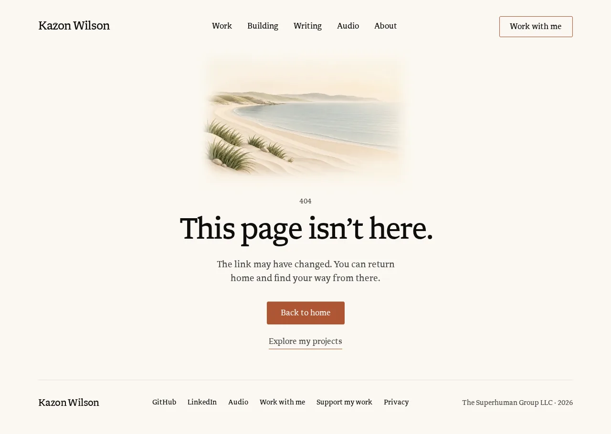
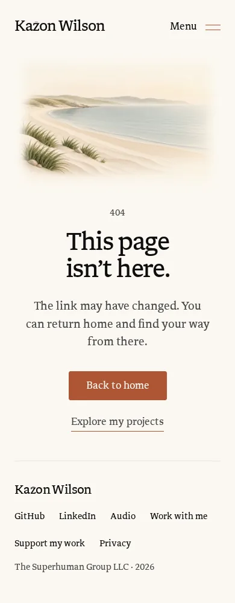
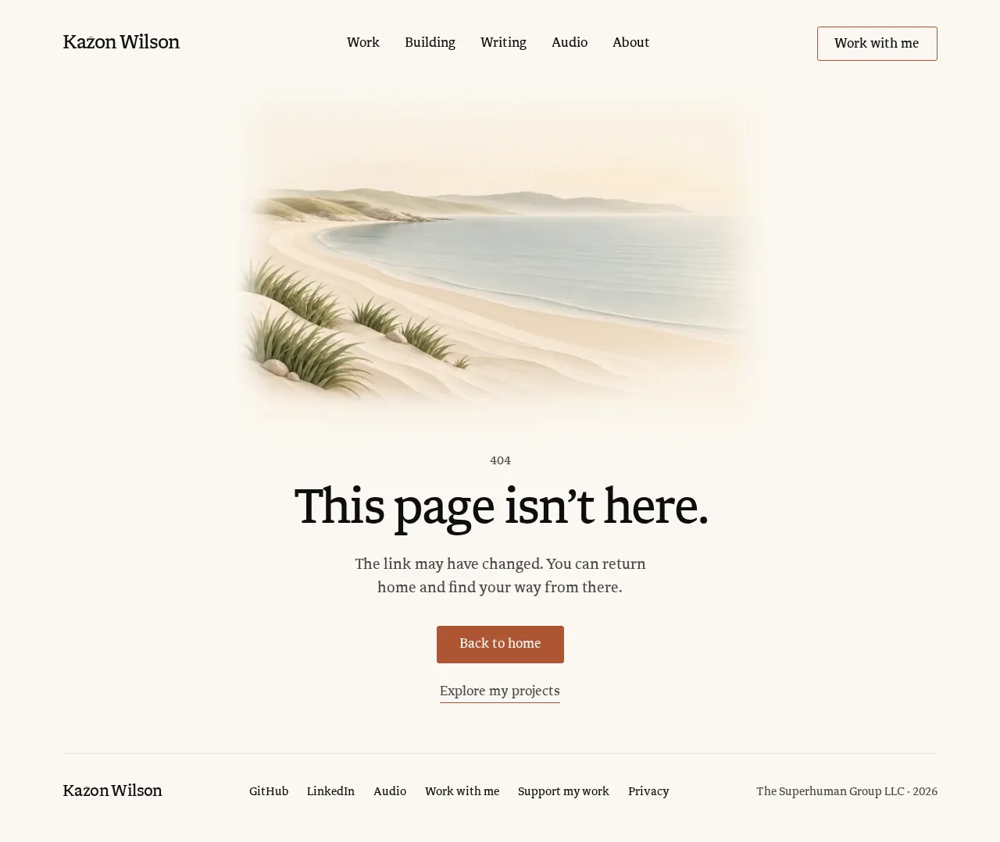
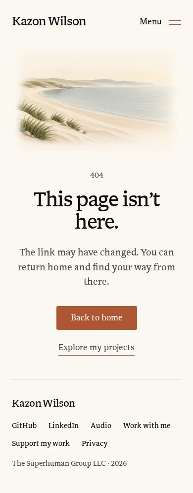
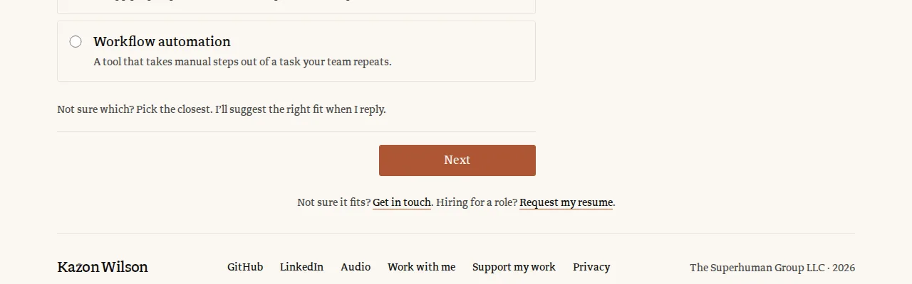
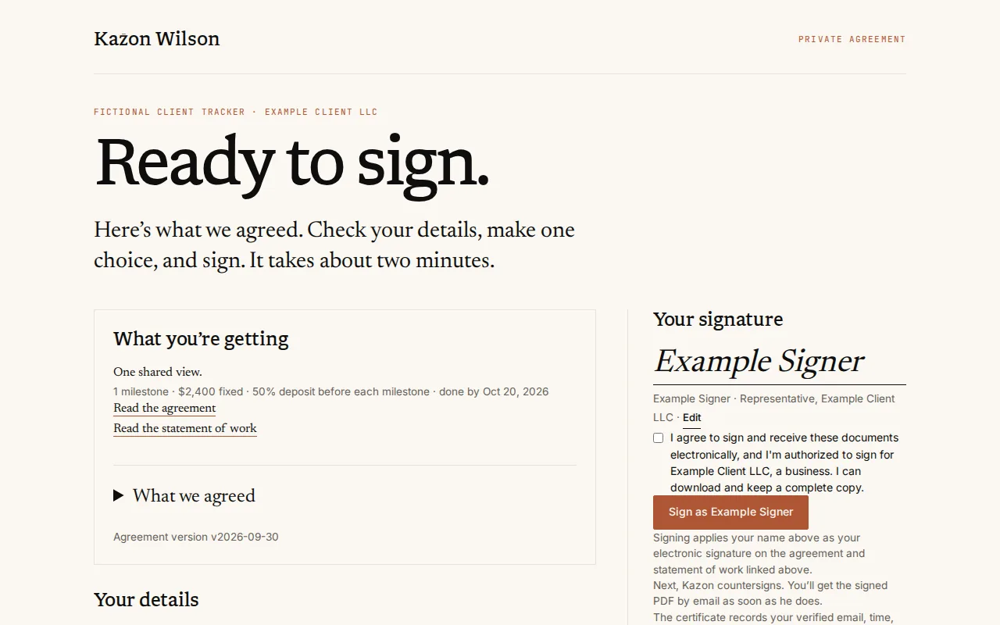
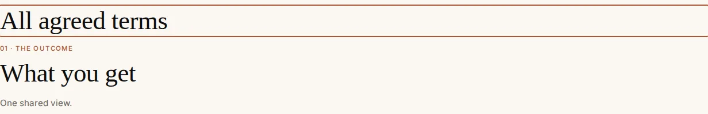
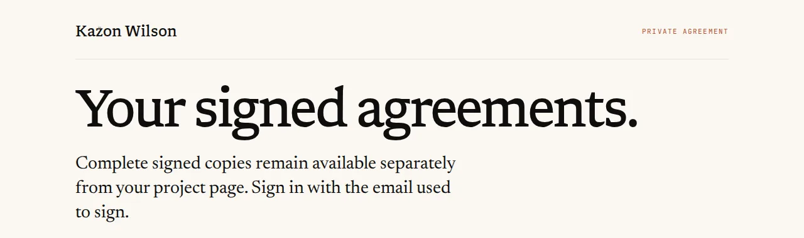

Design study · Hallmark audit follow-up · 2026-10-22
404 page, form errors and agreement type
Three small, site-wide calls from the Hallmark audit, each beside what ships today. Nothing here is built. Pick one option per decision and reply with the IDs, for example “D9.1-B, D9.2-A, D9.3-B”.
“Keep as is” shows PR #204 as its CI run captured it at f0abd1f. The form-error demo under D9.2-A needs a live page, so it is a recreation of PR #204, and the capture sits beside it to compare. The alternatives are live recreations that use the site’s own CSS values, real copy and the approved coast picture. Every position quoted comes from a test page that loads the shipped stylesheets; it puts the 404’s “Back to home” and the brief’s Next button within a pixel of where the f0abd1f captures show them (681 and 768px at 1280).
On a phone the 1280-wide previews are scaled down to fit. Pinch to zoom; they stay sharp.
Already handled in PR #204, no decision needed. These apply to every option below.
The 404 picture is 450 × 300px instead of 700px wide, so “Back to home” sits above a 1280 × 800 fold (src/pages/404.astro:27), and “Explore my projects” has a 44px tap area.
Headings balance their lines site-wide, so the phone 404 no longer leaves “here.” alone on a line (src/styles/global.css:105).
The software brief has its own smaller heading, so Next fits inside 1280 × 800 (src/styles/software-intake.css:21).
Field edges clear 3:1 with --field-border, and a field with a problem shows the accent edge (global.css:77,298).
Agreement fields use the site’s instant 2px focus outline, not the 1.2:1 halo (studio.css:35-37), and the /agreements heading clears the header rule (studio.css:137).
D9.1 · Your call 8 · /404
Should the 404 page stay centred?
Hallmark graded it major as “centred everything” (gate 6; #14, chrome-7): the picture, the status, the heading, the line and both links sit on one centre line, a common template look. The verifier called major overstated, because the page meets its approved goal and few people see it.
Where it was decided:docs/prelaunch-qa-2026-09-15.md:32-34 records the approved goal (a peaceful, reassuring page with familiar type, generous space, a plain explanation and one primary way home) but not the alignment. The picture’s review: docs/asset-reviews/quiet-coast-v2.md.
D9.1-AKeep as is
PR #204
thesuperhuman.us/404 · 1280 wide · CI capture at f0abd1f (PR #204)

800px fold
390 wide · CI capture at f0abd1f

844px fold
Before PR #204: the CI captures at 08e9b22 (picture 700px wide)
not-found-desktop.png · CI capture at 08e9b22

not-found-phone.png · CI capture at 08e9b22

What changes
Nothing beyond PR #204. Everything stacks on the centre line under the 450 × 300px picture.
Why it could be better
It is the look you approved, symmetric and quiet, and a centred stack is what most people expect from an error page.
Trade-off
Every other page starts its heading and links from the left, so the 404 is the one page that reads like a template.
Effort · files · measured
None. “Back to home” ends 681px down at 1280 × 800 and 663px down at 390 × 844, measured on the f0abd1f captures.
Guideline check
Copy unchanged · tokens unchanged · 48px button and a 44px link area · no motion · no new art.
D9.1-BWords left, picture right
Recommended
Why this one: it reuses the composition of Home’s first screen (words left, picture right), puts the way home where the eye starts reading, and needs only CSS in one file.
thesuperhuman.us/404 · 1280 wide · recreation
390 wide · recreation
What changes
On wide screens the words take the left column, left-aligned, with “Back to home” and “Explore my projects” side by side; the picture sits on the right, up to 520px wide. On phones the picture stays on top and the words below align left.
Why it could be better
It matches Home and the left-aligned headings on every other page, and on wide screens the button rises well up the first screen (measured below). Phones keep today’s height.
Trade-off
It changes a look you approved. The picture moves and grows (450 to about 510px), so its placement needs a fresh in-page check.
Effort · files · measured
S.src/pages/404.astro (styles only: the picture is hidden from screen readers, so the markup order can stay), docs/asset-reviews/quiet-coast-v2.md (in-page review of the new placement), docs/website-content-model.md (record the alignment).
Guideline check
No copy change · existing tokens · 48px button and 44px link area · no motion · needs image QA for the new placement (in-page review, section 3 of docs/generated-image-qa.md); no new art.
D9.1-CWords first, the coast as a horizon
Alternative
thesuperhuman.us/404 · 1280 wide · recreation
390 wide · recreation
What changes
The page opens like every other page: “404” in the mono kicker style, then the heading, the line and both links, left-aligned. The same picture becomes a wide, low band under the links that fades into the footer rule.
Why it could be better
The message and the way home come first on every screen, and the band echoes the horizon that closes Home.
Trade-off
The picture is cropped to a band (shoreline and dune grass, less sky), a new crop of approved art. “404” turns accent-coloured and mono.
Effort · files · measured
S.src/pages/404.astro (markup order and styles), docs/asset-reviews/quiet-coast-v2.md (review of the new crop).
Guideline check
No copy change (“404” stays, in the .page-kicker style) · existing tokens · 48px button and 44px link area · no motion · needs image QA: a new crop of approved art, inspected in the page at 1280 and 390.
D9.1-DWords in the coast’s sky
Alternative
thesuperhuman.us/404 · 1280 wide · recreation
390 wide · recreation
What changes
The picture spans the whole column (1120px at 1280) and moves up under the words, so “404”, the heading, the line and both links sit left-aligned in its empty sky with the headland just below. Unlike C, nothing is cropped: the whole scene fills the first screen. One rule places it at every width: the picture is pulled up by 17% of its own width (12% on phones), and its sky is about 19.5% of its width, so the words always end above the land.
Why it could be better
One quiet scene instead of a stack, the way Home’s first screen sets its words in the open part of its picture. The way home sits high on the first screen at both widths (measured below), and the picture keeps its full 3:2 shape.
Trade-off
The picture is drawn about 2.5 times wider than PR #204’s 450px. The file is 1536px wide, so a 2x screen enlarges it about 1.5 times and it looks softer. The words sit on the picture’s sky, so its review has to confirm they stay clear of the land at every width. The footer moves below the 1280 × 800 fold. On phones the sky is too short to hold the words, so the phone looks close to C, with the whole picture instead of a band.
Effort · files · measured
S.src/pages/404.astro (styles only: a one-column grid with the picture placed after the words and a negative top margin; the picture is hidden from screen readers, so the markup order can stay), docs/asset-reviews/quiet-coast-v2.md (in-page review at the new size and placement).
Guideline check
No copy change · existing tokens · the sky under the words is paper-coloured, so the muted line keeps at least 7.6:1 (8.4:1 on plain paper) · 48px button and 44px link area · no motion · needs image QA: same art and full 3:2 shape, but a new size and the words over its sky (section 3 of docs/generated-image-qa.md, including sharpness at the display size and pixel density).
D9.2 · Your call 21 · every form
Should forms keep a line free for each error message?
Hallmark asked forms to reserve a line under each field (gate 39; part of #47, chrome-18, ws-23) so nothing moves when a message appears; home-16 and audio-16 leaned the other way. Today a message appears only after Send or Next, takes a line under its field and pushes what is below it down, and focus moves to the first field with a problem.
Where it was decided: no doc covers where messages sit. docs/prelaunch-qa-2026-09-29-software-brief.md:31 covers how they are announced (linked with aria-describedby, the summary announced with role="status"), and every option below keeps that.
Each option shows the Home contact form and the brief’s first screen. Press Show the errors to see what happens after Send or Next with nothing filled in. The messages are the site’s own (src/lib/validation.ts, src/scripts/software-inquiry.ts:153).
D9.2-AKeep as is
Recommended
Why this one: the push only happens right after a press and focus goes with it to the first message, so it costs nothing the rest of the time; B gives up height on every form and puts the brief’s Next back below the fold that PR #204 just fixed.
thesuperhuman.us/#contact · Send a message · desktop · recreation of PR #204
390 wide · recreation
thesuperhuman.us/software/start · first screen · 1280 wide, from the options to below the fold · recreation of PR #204
Messages appear and everything below them moves down.
Compare: the same crop of the brief in the CI capture at f0abd1f
software-brief-question-1-desktop.png · 520 to 920px · CI capture at f0abd1f (PR #204)

What changes
Nothing. Messages stay hidden until Send or Next; each then takes a line under its field, and “Please check the highlighted fields.” appears near the button.
Why it could be better
Forms stay as short as they can be. The movement follows the visitor’s own press, which browsers leave out of their layout-shift score, and focus lands on the first message.
Trade-off
What sits below a message jumps. On the brief’s first screen the field message and the summary line push Next from 768 to 837px at 1280, past the 800 fold, and from 823 to 892px on a 390 × 844 phone. Choosing an option with a tap moves on by itself, so nobody has to find Next again.
Effort · files · measured
None. Contact form 752px tall at 1280 wide (848 with three messages) and 874px at 390 (1001).
Guideline check
Copy unchanged · tokens unchanged · accent messages at 4.78:1 · focus moves to the first message · no motion · no new art.
D9.2-BReserve a line for every message
Hallmark’s fix
thesuperhuman.us/#contact · Send a message · desktop · recreation
390 wide · recreation
thesuperhuman.us/software/start · first screen · 1280 wide · recreation
Messages fill lines that were already there, so nothing moves.
What changes
Every message slot above a button keeps one empty line at rest (min-height: 1lh), and so does the brief’s summary line above Next. Nothing moves when messages appear.
Why it could be better
Messages appear in place, and nothing under the pointer moves.
Trade-off
Every form is taller all the time, with gaps that read as uneven spacing: the contact form grows by 121px at 1280 (873) and 152px at 390 (1026). The brief’s Next sits at 837px at 1280 and 892px at 390, below the fold on both.
Effort · files
S.src/styles/global.css and src/styles/audio-intake.css (reserve the line), src/scripts/form-submission.ts:34,66 and src/scripts/software-inquiry.ts:158 (empty the text instead of hiding it), and the forms that mark slots hidden: ContactForm.astro, ResumeRequestForm.astro, audio/ReleaseInterest.astro, software/start.astro, audio/start.astro.
Guideline check
Copy unchanged · existing tokens · no motion · no new art · the brief’s Next falls below the 1280 × 800 fold again, undoing PR #204’s fix.
D9.2-CMessage on the label’s line
Alternative
thesuperhuman.us/#contact · Send a message · desktop · recreation
390 wide · recreation
thesuperhuman.us/software/start · first screen · 1280 wide · recreation
On the contact form nothing moves. On the brief, Next moves one line instead of two.
What changes
A field’s message sits at the right end of its label’s line instead of under the field, so it adds no height. The summary line moves under the button. Brief screens whose question is the heading (no visible label) keep today’s line under the answer.
Why it could be better
Nothing above the button moves and nothing grows at rest on the contact, resume and release forms or the brief’s contact step. On the brief’s first screen Next moves 34px (768 to 802) instead of 69.
Trade-off
A new pattern to keep consistent across six forms. On a wide field the message sits far from the label’s start, and a long label with a long message wraps on a phone and pushes as today.
Effort · files
M. Markup in ContactForm.astro, ResumeRequestForm.astro, audio/ReleaseInterest.astro, audio/start.astro and software/start.astro (label and message share a row; the summary line moves after the buttons), shared CSS in global.css and audio-intake.css. The scripts still find messages by data-form-error; tests that read the error markup need updating.
Guideline check
Copy unchanged · existing tokens · accent messages at 4.78:1 · messages stay linked to their fields with aria-describedby · no motion · no new art.
D9.2-DSlide the message open
Alternative · motion
thesuperhuman.us/#contact · Send a message · desktop · recreation
390 wide · recreation
thesuperhuman.us/software/start · first screen · 1280 wide · recreation
With reduced motion the messages appear at once, as today.
What changes
Messages still push, but each opens over 180ms on --ease-site and fades in, instead of appearing at once. With reduced motion they appear at once.
Why it could be better
The push reads as the form making room rather than a glitch, and nothing changes at rest.
Trade-off
The same distance still moves, a little later, right next to the control just pressed. CSS-only height animation (interpolate-size) runs in Chrome and Edge today; Safari and Firefox fade the message in and keep today’s jump.
Effort · files
S. CSS only: src/styles/global.css and src/styles/audio-intake.css (@starting-style, a transition and a reduced-motion rule).
Guideline check
Copy unchanged · --ease-site and existing tokens · reduced motion: messages appear at once · no new art.
D9.3 · Worth considering 5 · /agreements, /offer/…/sign and the signed PDF
Which serif should the agreement pages use?
Hallmark counted four families on the agreement and offer pages (gate 37; #11, chrome-5, ws-15): Libron headings over a Newsreader body, plus Inter and JetBrains Mono. The October 4 switch to Libron (commit 9be434d) never reached src/styles/studio.css:143 or src/layouts/AgreementLayout.astro:9, and the signed PDF sets its headings in Newsreader (src/lib/agreement-pdf.ts:4,67).
Also found while checking: eleven more rules in five files still name Newsreader (the “What we agreed” headings, the typed signature, project updates and two owner screens). The client project page and the owner pages never load Newsreader, so those headings fall back to Georgia, or Times where Georgia is missing, as in the CI capture under A.
Where it was decided: commit 9be434d (“Use Libron for site serif typography”, October 4) for the site; docs/website-system-plan.md:26 still says “retain Newsreader”. No doc records the PDF’s fonts; they arrived with the signing feature. Emails (src/lib/email-template.ts:24) also name Newsreader and are not part of this decision.
D9.3-AKeep as is
PR #204
thesuperhuman.us/offer/…/sign · 1280 wide · CI capture at f0abd1f (PR #204, demo data)

/studio/software/… · client project page · CI capture at f0abd1f

/agreements · CI capture at f0abd1f

signed PDF · top of the statement of work · layout from agreement-pdf.ts
Faces today
Page headings Libron
Lede, paragraphs and links Newsreader
“What we agreed” headings Newsreader
Typed signature Newsreader, slant faked by the browser
Labels, buttons, agreement text Inter
Client project page headings Georgia or Times (Newsreader never loads)
PDF headings · PDF text Newsreader · Inter
What changes
Nothing.
Why it could be better
The lede and links share a face with the PDF’s headings, and there is no work to do.
Trade-off
Two serifs on one screen, a faked italic for the signature (the page loads no Newsreader italic), a fallback serif on the client project page, and a second serif download only these pages need.
Effort · files
None.
Guideline check
Copy unchanged · no motion · no new art · Hallmark gate 37 stays failed.
D9.3-BLibron on screen, the PDF keeps Newsreader
Recommended
Why this one: one small change fixes every screen, including the Georgia fallback on the client project page, and drops a font download; the PDF’s 18pt headings are the only Newsreader left, and C can follow later if you want them to match.
Agreement, offer, project and owner screens use Libron for every serif line, and the typed signature uses Libron’s italic file, which the site already loads. The agreement pages stop loading Newsreader. The signed PDF is unchanged, and the system plan records that its headings stay Newsreader.
Why it could be better
One serif everywhere a visitor looks, which finishes the October 4 switch; the signature becomes a true italic instead of a slanted roman.
Trade-off
The screens and the signed PDF use different heading faces; the PDF’s text (Inter) still matches the agreement text on screen. Libron runs wider than Newsreader, so the signing lede takes three lines at 1280 instead of two.
Effort · files
S.src/styles/studio.css:143, src/layouts/AgreementLayout.astro:9 (Newsreader out of the font link), src/pages/offer/[token]/sign.astro:101, src/components/SoftwareAgreedTerms.astro:89,103,104,121, src/components/SoftwareProjectUpdate.astro:78,82,85, src/components/owner/SoftwareAgreementPanel.astro:86,90, src/pages/owner/requests/[id]/update.astro:134 (each to var(--font-serif)), docs/website-system-plan.md:26.
Guideline check
Copy unchanged · uses the --font-serif token · contrast unchanged · no motion · no new art.
D9.3-CLibron everywhere, the signed PDF too
Alternative
Screens: the same as B. Only the PDF differs.
signed PDF · headings in Libron · recreation
Faces with C
Every serif line on screen Libron
Typed signature Libron Italic
PDF headings · PDF text Libron · Inter
A returning client’s original MSA Kept as signed (Newsreader)
What changes
Everything in B, and the PDF’s headings switch to Libron: a TTF built from the pinned Libron source replaces the embedded Newsreader file. PDF text stays Inter.
Why it could be better
The copy a client keeps matches the pages they signed on, and Newsreader leaves the codebase apart from emails.
Trade-off
Only agreements rendered after the change use it; stored PDFs stay byte for byte. A returning client’s packet copies their original signed MSA unchanged, so one packet can hold a Newsreader MSA beside a Libron statement of work. The new PDF needs a check by eye.
Effort · files
M. B’s files plus src/lib/agreement-pdf.ts:4,67, src/assets/agreement-fonts/ (Libron TTF, its base64 copy and OFL text in place of Newsreader’s), tests/lib/agreement-pdf.test.ts:3,91,172-174, and a build step for the TTF beside scripts/build-personal-name-fonts.py.
Guideline check
Copy unchanged · --font-serif on screen · the OFL allows embedding (public/fonts/OFL-Libron.txt) · no motion · no new art.
The agreement pages set their headings in Newsreader too, and load its italic for the signature. The client project page loads Newsreader so its agreed-terms headings stop falling back.
Why it could be better
Signing reads as one document set, apart from the public site, and the screen matches the PDF exactly.
Trade-off
It goes against the October 4 decision that Libron is the site serif. The name mark is cut from Libron, so the page still shows two serifs, and the client project page gains a font download.
Effort · files
S.src/styles/studio.css (agreement headings), src/layouts/AgreementLayout.astro:9 (add the italic), src/pages/studio/software/[id].astro (load Newsreader), the owner screens’ font link in src/layouts/OwnerLayout.astro, docs/website-system-plan.md:26.
Guideline check
Copy unchanged · no new tokens · no motion · no new art · gate 37 still counts two serifs because of the name mark.
Your calls
What I need from you
D9.1 · 404 alignmentA keep centred · B words left, picture right · C words first, coast as a horizon · D words in the coast’s sky.Recommended: D9.1-B
D9.2 · Form error messagesA keep · B reserve a line for every message · C message on the label’s line · D slide the message open.Recommended: D9.2-A
D9.3 · Agreement serifA keep · B Libron on screen, PDF unchanged · C Libron, PDF too · D Newsreader for agreements.Recommended: D9.3-B
The three are independent. If you pick D9.2-C or D, the brief’s first screen still gets PR #204’s smaller heading; if you pick D9.3-C, B’s screen changes come with it.